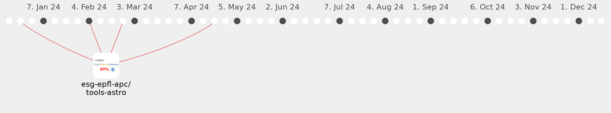

Galaxy Community Activities
dsavchenko
dsavchenko
https://github.com/dsavchenko
Commits all-time:
25
Commits last year:
24

esg-epfl-apc/tools-astro
(24)
7cfb6ce
00d1f46
d2a4aa4
634032c
f7211fa
2f5d1fa
aa2dfc1
795d737
f6a1e29
c0626e8
890cb62
8cbbc6a
c8ce1f1
04da544
45414b1
302f329
bb34f4b
8e992ee
2991f65
d754d57
472dee3
d5be362
2f23ec0
4543470